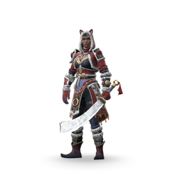
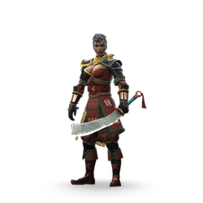

Юкка

Редкость: Rare
Пол: Female
Фракция: Dynasty
Энергия: Shadow
Класс: Easy
Добыча: Arena V: Void Room
| Название | Редкость | Изображение |
|---|---|---|
| Охотник | Обычный | |
| Северный Странник | Эпический |  |
| Охотник за головами | Эпический | |
| Невосприимчивый | Сезонный |  |
| Караванщик Штормовой Долины | Сезонный | |
| Корсар | Сезонный | |
| Безупречный бунтарь | Сезонный |
| Название | Редкость | Изображение |
|---|---|---|
| Дадао | Обычный | |
| На грани революции | Обычный | |
| Дадао странника | Обычный | |
| Тысяча дорог Дадао | Обычный | |
| Профессионал стали | Обычный |  |
| Волна-убийца | Обычный |  |
| Трофей Дадао | Обычный | |
| Тяжелый клинок | Редкий |  |
| Анархия | Редкий |  |
| Сабля Резак | Редкий | |
| Лазурная волна Дадао | Редкий | |
| Жнец тирании | Редкий | |
| Лапа Купидона | Редкий | |
| Сталь бушующего ветра | Эпический |
| Название | Описание | Изображение |
|---|---|---|
| Дрессировка кошек | Когда Шейд возвращается к Юкке, она восстанавливает часть ее здоровья. |  |
| Многочисленные раны | Максимальное количество Ран увеличено до 7. |  |
| Месть Тени | Когда Юкка получает критический урон, Шейд мгновенно становится готовым к атаке. Его следующая атака гарантированно нанесет критический урон. | |
| Командная работа | Если Юкке удастся успешно поразить противника мощной атакой, следующая атака Шейда станет критической. | |
| Теневой заряд | После успешной атаки Тени Юкка получает большое количество теневой энергии. |  |
| Моральный подъем | Когда Гильотина активируется, Юкка восстанавливает часть своего здоровья. | |
| Быстрая тень | Тень возвращается быстрее. |  |
| Глубокие раны | Раны заживают дольше. |  |
| Девятая жизнь | Когда Юкка находится в форме тени, она восстанавливает весь полученный урон. | |
| Свежие раны | Заблокированные атаки продлевают длительность Ран. |  |
| Судьба обмана | У героев вашей команды сокращено время восстановления дальних атак. |  |
| Судьба Веры | Все эффекты исцеления восстанавливают больше здоровья героям в вашей команде. |